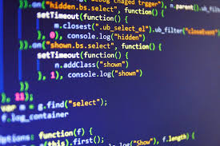

Ciência da computação é a ciência que estuda as técnicas, metodologias, instrumentos computacionais e aplicações tecnológicas, que informatizem os processos e desenvolvam soluções de processamento de dados de entrada e saída pautados no computador. Não se restringindo apenas ao estudo dos algoritmos, suas aplicações e implementação na forma de software. Assim, a Ciência da Computação também abrange as técnicas de modelagem de dados e gerenciamento de banco de dados, envolvendo também a telecomunicação e os protocolos de comunicação, além de princípios que abrangem outras especializações da área.
Enquanto ciência, classifica-se como ciência exata, apesar de herdar elementos da lógica filosófica aristotélica, tendo por isso um papel importante na formalização matemática de algoritmos, como forma de representar problemas decidíveis, i.e., os que são susceptíveis de redução a operações elementares básicas, capazes de serem reproduzidas através de um dispositivo qualquer capaz de armazenar e manipular dados. Um destes dispositivos é o computador digital, de uso generalizado, nos dias de hoje. Também de fundamental importância para a área de Ciência da Computação são as metodologias e técnicas ligadas à implementação de software que abordam a especificação, modelagem, codificação, teste e avaliação de sistemas de software.